02 · Destaques
Um novo horizonte sob a neve
Picos Congelados
Quinze espécies, ondas maiores e ameaças capazes de pressionar também a retaguarda.
Caça, cristal e coroa
Fenrir, Sacerdotisa de Cristal, Rei do Inverno e o raro Astarok têm mecânicas próprias.
O legado da Forja
Dezoito famílias vulcânicas e onze técnicas permanentes para preparar sua equipe.
Kharun passa a causar mais dano e ganha novas ferramentas de sobrevivência. Resistência a crítico amplia as opções de atributos e equipamentos. Inventário, ascensão e navegação pelos mundos recebem correções de uso diário.
03 · Mundo 4
Picos Congelados
Da costa ao trono, a campanha atravessa seis regiões com cenários próprios. Neve, terra, bosque e ruínas conduzem às áreas de catedral e cidadela. Cada chefe fixo tem sua arena; Astarok guarda um covil exclusivo.
As fases comuns reúnem de 5 a 8 inimigos, com tanques, curandeiros, atacantes e apoiadores. Espécies já encontradas continuam nas ondas enquanto novos papéis entram. A força dos inimigos cresce ao longo do mundo, sem cair ao atravessar as fronteiras das regiões.
Gélido: adapte o ritmo da sua equipe
Em Picos Congelados, a duração das recargas é multiplicada por 0,85: uma recarga de 10 segundos passa a 8,5 segundos. A velocidade dos ataques básicos também é multiplicada por 0,85, tornando-os 15% mais lentos.
O efeito vale somente para heróis e seus servos. Inimigos e chefes não recebem esses modificadores; eles desaparecem ao sair do mundo.
A trilha tem a música original Aurora sobre o Permafrost, com sinos, flauta, cordas e harpa. O loop usa o sistema de som já existente e respeita suas configurações de música.
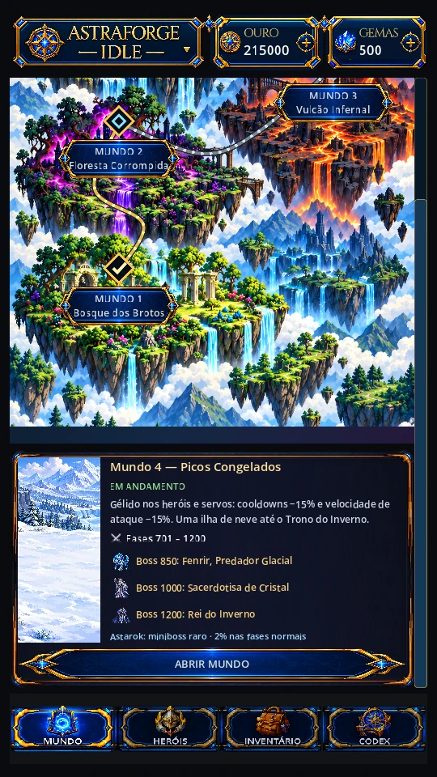
04 · Novos inimigos
Quinze ameaças do inverno
A distância já não basta para proteger a retaguarda. Flechas, plumas, teias e magia alcançam os heróis de trás, enquanto curas e guardas sustentam a linha inimiga.
| Primeira fase | Inimigo | Ameaça principal |
|---|---|---|
| 701 | Lobo do Permafrost | Mordida que reduz a cura recebida. |
| 701 | Raposa da Aurora | Cura dois aliados feridos. |
| 701 | Corvo Glacial | Plumas contra dois alvos da retaguarda. |
| 701 | Aranha de Cristal | Teia que imobiliza um alvo de trás. |
| 701 | Urso das Geadas | Guarda para resistir na linha de frente. |
| 731 | Golem de Cristal | Impacto com atordoamento na frente. |
| 761 | Revenante Gélido | Golpe que enfraquece a defesa. |
| 801 | Arqueira da Nevasca | Disparo contra dois alvos de trás. |
| 821 | Oráculo dos Cristais | Cura três aliados feridos. |
| 851 | Sentinela do Inverno | Guarda para a frente aliada. |
| 871 | Mago da Geada | Magia e lentidão dos básicos na retaguarda. |
| 901 | Fagulha Glacial | Aumenta o ataque dos aliados. |
| 951 | Dama da Neve | Cura e guarda para o grupo. |
| 1001 | Caçador dos Picos | Investida contra a retaguarda. |
| 1051 | Vórtice de Nevasca | Magia em área que reduz ataque. |
05 · Chefes
Os guardiões de Picos Congelados
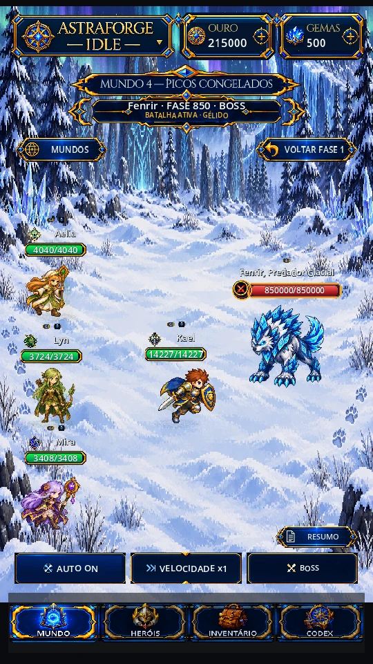
Fase 850
Fenrir, Predador Glacial
Marca e caça um alvo da retaguarda. O salto concentra pressão, as garras reduzem cura e o uivo atrapalha o deslocamento. Com metade do HP, a caça se intensifica e ele ganha aceleração temporária.
Preparação atual: equipamento 70 com refino +5 venceu nas cinco simulações finais da build de teste.
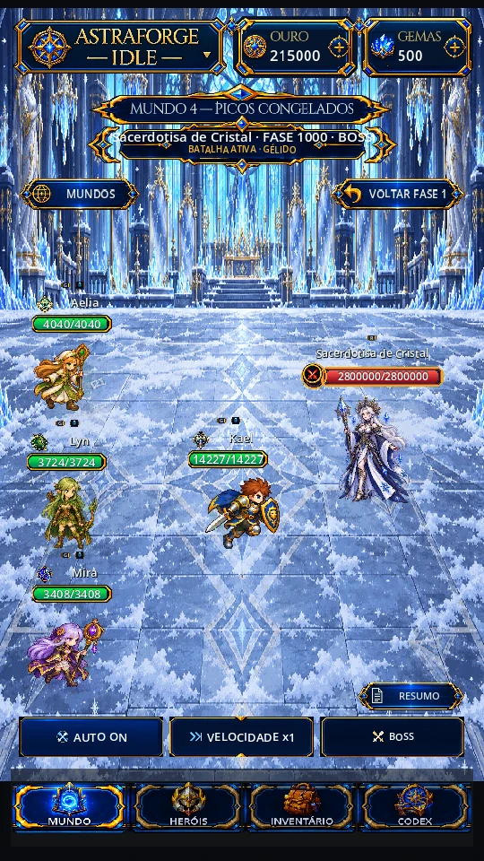
Fase 1000
Sacerdotisa de Cristal
Alterna julgamentos prismáticos, controles e três espelhos visíveis. Resiste à magia; dano físico pode quebrar os espelhos e abrir uma breve janela de vulnerabilidade.
Progressão futura: a build atual de teste perdeu as dez tentativas. Equipamento 80/90 e ascensão 2 ainda não existem nesta Beta.
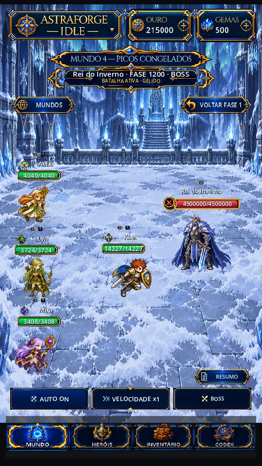
Fase 1200
Rei do Inverno
Decreto do Inverno atinge as duas linhas. Correntes da Coroa interrompem conjurações ou atrasam uma habilidade; Bastião do Trono reforça sua defesa. Resistência e proteção temporária contra controle impedem aprisioná-lo em uma sequência permanente.
Progressão futura: a build atual de teste perdeu as dez tentativas. A calibração com os próximos tiers será feita quando esses sistemas existirem.
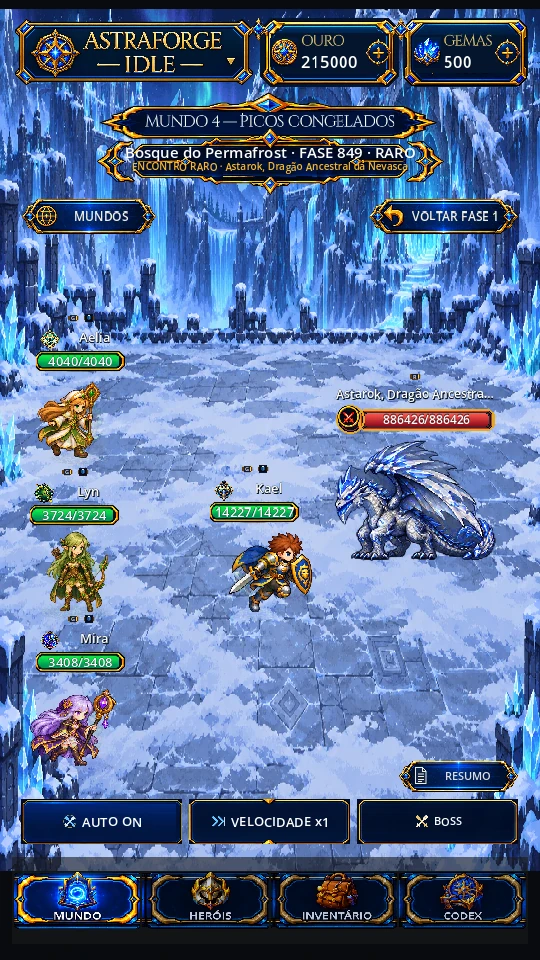
Encontro raro · 2%
Astarok, Dragão Ancestral da Nevasca
Pode surgir nas fases comuns 701–849, 851–999 e 1001–1199. Sua força acompanha a fase; ele não ocupa um chefe fixo e não tem garantia acumulada de aparição.
Novos debuffs aplicados durante a carga do Cataclismo reduzem seu dano. Maldições de Nymeris participam dessa reação, e dano verdadeiro explora a vulnerabilidade do dragão.
06 · Personagens e habilidades
A equipe encontra novas respostas
Esta atualização trabalha com os heróis existentes. As mudanças abaixo são ajustes de habilidades ou de sua interação com o Mundo 4.
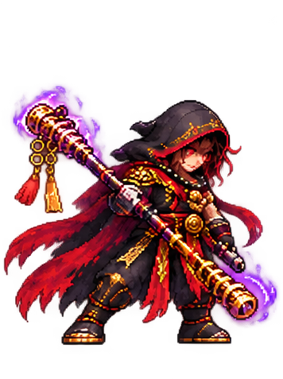
Monge Renegado · controle e sobrevivência
Kharun
O monge ganha ferramentas para sustentar a luta, inclusive diante de um único chefe.
- Quatro habilidades ativas: coeficientes de dano aumentados em 20%, incluindo perfuração e colisão do Bastão do Céu Partido.
- Roda das Mil Sombras: rouba 15–24% do HP efetivamente removido, conforme o nível, com cura limitada a 12% do HP máximo por uso. Guarda de 16% contra um ou dois alvos e 24% contra três ou mais começa no primeiro acerto e dura até 5 segundos após a conclusão. AUTO passa a priorizar Roda.
- Disciplina do Renegado: Aparar reduz 60% do dano dos básicos e agora 35% de habilidades diretas físicas ou mágicas. A chance é de 20–29%, além de bônus de postura, com recarga compartilhada de 1,5 segundo após sucesso.
- Esquiva da Disciplina: contribuição própria de 5–9,5 pontos percentuais, somada à base, atributos e equipamento. A precisão inimiga e o limite de 50% continuam valendo.
- Caminho Sem Mestre: posturas defensivas de 15% / 25% / 35% no nível 1, preservando o crescimento por nível.
Aparar não reduz dano periódico, refletido, ambiental ou verdadeiro. Esquiva é resolvida antes da aparada; o mesmo ataque não usa as duas defesas. As reações agora mostram um passo de esquiva e uma defesa com bastão distintos.
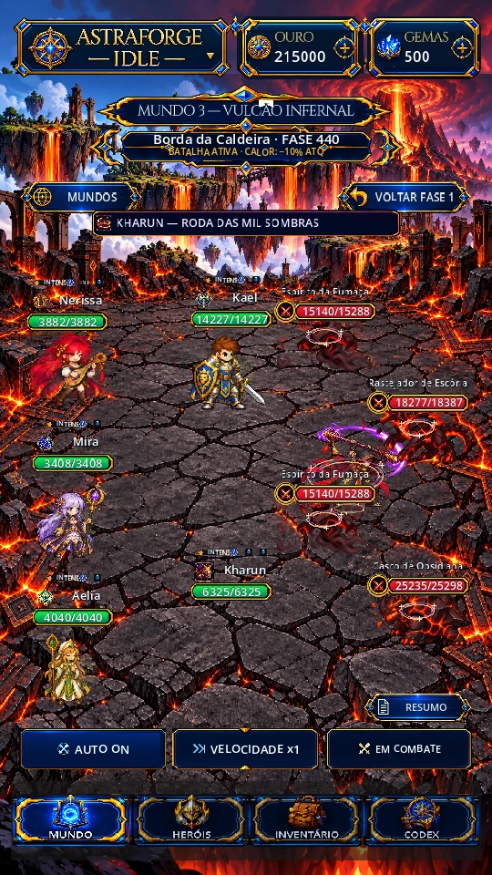
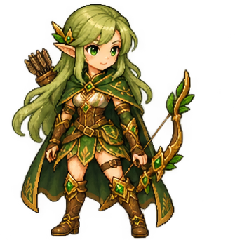
Lyn
Seus pacotes passivos de dano verdadeiro passam a respeitar a vulnerabilidade de Astarok. A correção alinha esse dano à mecânica do novo chefe.
Mira
O dano verdadeiro de suas passivas também explora corretamente a vulnerabilidade de Astarok. Não há aumento global dos coeficientes de Mira neste ajuste.
Nymeris
Maldições nativas aplicadas ou reaplicadas durante o Cataclismo entram na reação de Astarok. Pilhas de uma mesma maldição contam como uma categoria. Seus servos recebem Gélido com os heróis.
Todos os heróis: resistência a crítico
Um novo atributo distribuível concede 0,5 ponto percentual por ponto investido, com até 25 pontos por atributo. A resistência subtrai a chance crítica do atacante: 30% de crítico contra 10% de resistência resulta em 20% de chance efetiva. O multiplicador do dano crítico permanece igual.
O atributo aparece na prévia, nos status, no inventário e nas opções defensivas da Oficina. Distribuições já salvas são preservadas; a nova opção começa em zero.
07 · Equipamentos e sistemas
A Forja alcança o nível 70
Dezoito famílias de equipamento trazem lava, cinzas, ferro e obsidiana do Mundo 3: nove armas, quatro peças leves, quatro pesadas e um acessório universal. Compatibilidade, atributos finais, refino e extras continuam usando as mesmas regras da equipe.
Armas vulcânicas
9 armas · uma família para cada herói
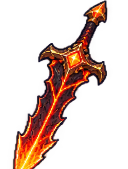
Épico · Nível 70
Espada da Caldeira Eterna
Espada
KaelHerói de nível 70 ou superior
Receita desta peça
55.000 Ouro · 3 adicionais à escolha
- Essência de Forja300
- Olho do Núcleo32
- Selo do Arauto28
- Insígnia de Malkor2
- Presa do Permafrost40
- Couro das Geadas32
- Pluma Glacial24
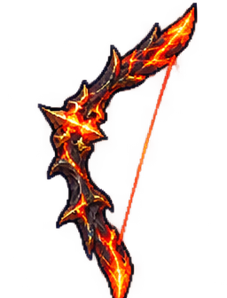
Épico · Nível 70
Arco das Brasas Ancestrais
Arco
LynHerói de nível 70 ou superior
Receita desta peça
55.000 Ouro · 3 adicionais à escolha
- Essência de Forja300
- Olho do Núcleo32
- Selo do Arauto28
- Insígnia de Malkor2
- Presa do Permafrost40
- Couro das Geadas32
- Pluma Glacial24
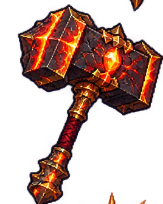
Épico · Nível 70
Martelo do Núcleo Ígneo
Martelo
DorrikHerói de nível 70 ou superior
Receita desta peça
55.000 Ouro · 3 adicionais à escolha
- Essência de Forja300
- Olho do Núcleo32
- Selo do Arauto28
- Insígnia de Malkor2
- Presa do Permafrost40
- Couro das Geadas32
- Pluma Glacial24
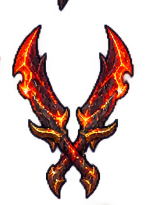
Épico · Nível 70
Gêmeas da Lava Negra
Lâminas duplas
FaeHerói de nível 70 ou superior
Receita desta peça
55.000 Ouro · 3 adicionais à escolha
- Essência de Forja300
- Olho do Núcleo32
- Selo do Arauto28
- Insígnia de Malkor2
- Presa do Permafrost40
- Couro das Geadas32
- Pluma Glacial24
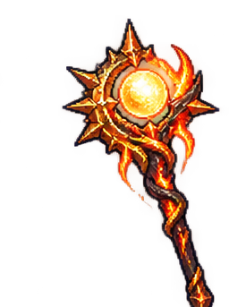
Épico · Nível 70
Cajado da Chama Vital
Cajado sagrado
AeliaHerói de nível 70 ou superior
Receita desta peça
55.000 Ouro · 3 adicionais à escolha
- Essência de Forja300
- Olho do Núcleo32
- Selo do Arauto28
- Insígnia de Malkor2
- Pluma Glacial40
- Cauda da Aurora32
- Fio da Nevasca24
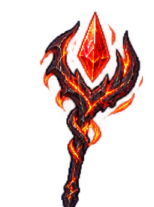
Épico · Nível 70
Cajado da Erupção Astral
Cajado
MiraHerói de nível 70 ou superior
Receita desta peça
55.000 Ouro · 3 adicionais à escolha
- Essência de Forja300
- Olho do Núcleo32
- Selo do Arauto28
- Insígnia de Malkor2
- Pluma Glacial40
- Cauda da Aurora32
- Fio da Nevasca24
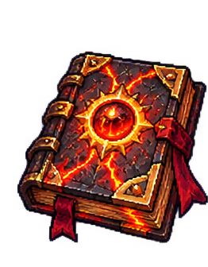
Épico · Nível 70
Grimório da Obsidiana Ardente
Grimório
NymerisHerói de nível 70 ou superior
Receita desta peça
55.000 Ouro · 3 adicionais à escolha
- Essência de Forja300
- Olho do Núcleo32
- Selo do Arauto28
- Insígnia de Malkor2
- Pluma Glacial40
- Cauda da Aurora32
- Fio da Nevasca24
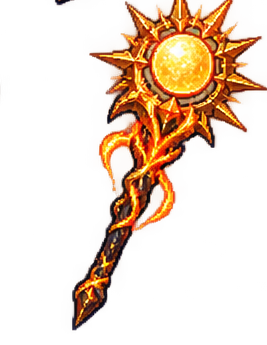
Épico · Nível 70
Bastão do Sol Vulcânico
Bastão celestial
KharunHerói de nível 70 ou superior
Receita desta peça
55.000 Ouro · 3 adicionais à escolha
- Essência de Forja300
- Olho do Núcleo32
- Selo do Arauto28
- Insígnia de Malkor2
- Presa do Permafrost40
- Couro das Geadas32
- Pluma Glacial24
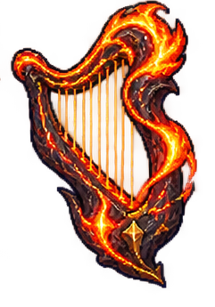
Épico · Nível 70
Harpa das Cinzas Luminosas
Instrumento
NerissaHerói de nível 70 ou superior
Receita desta peça
55.000 Ouro · 3 adicionais à escolha
- Essência de Forja300
- Olho do Núcleo32
- Selo do Arauto28
- Insígnia de Malkor2
- Pluma Glacial40
- Cauda da Aurora32
- Fio da Nevasca24
Proteções da Forja
8 peças · quatro leves e quatro pesadas
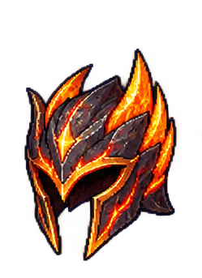
Épico · Nível 70
Elmo das Cinzas Sagradas
Elmo · leve
Aelia, Lyn, Mira, Fae, Nerissa e NymerisHerói de nível 70 ou superior
Receita desta peça
55.000 Ouro · 2 adicionais à escolha
- Essência de Forja300
- Olho do Núcleo32
- Selo do Arauto28
- Insígnia de Malkor2
- Cauda da Aurora40
- Seda Cristalina32
- Lágrima de Cristal24
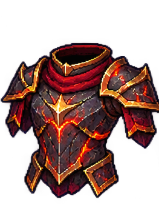
Épico · Nível 70
Armadura das Cinzas Sagradas
Armadura · leve
Aelia, Lyn, Mira, Fae, Nerissa e NymerisHerói de nível 70 ou superior
Receita desta peça
55.000 Ouro · 2 adicionais à escolha
- Essência de Forja300
- Olho do Núcleo32
- Selo do Arauto28
- Insígnia de Malkor2
- Cauda da Aurora40
- Seda Cristalina32
- Lágrima de Cristal24
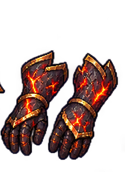
Épico · Nível 70
Luvas das Cinzas Sagradas
Luvas · leves
Aelia, Lyn, Mira, Fae, Nerissa e NymerisHerói de nível 70 ou superior
Receita desta peça
55.000 Ouro · 2 adicionais à escolha
- Essência de Forja300
- Olho do Núcleo32
- Selo do Arauto28
- Insígnia de Malkor2
- Cauda da Aurora40
- Seda Cristalina32
- Lágrima de Cristal24
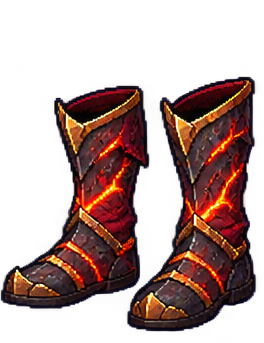
Épico · Nível 70
Botas das Cinzas Sagradas
Botas · leves
Aelia, Lyn, Mira, Fae, Nerissa e NymerisHerói de nível 70 ou superior
Receita desta peça
55.000 Ouro · 2 adicionais à escolha
- Essência de Forja300
- Olho do Núcleo32
- Selo do Arauto28
- Insígnia de Malkor2
- Cauda da Aurora40
- Seda Cristalina32
- Lágrima de Cristal24
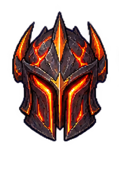
Épico · Nível 70
Elmo da Obsidiana Imperial
Elmo · pesado
Kael, Dorrik e KharunHerói de nível 70 ou superior
Receita desta peça
55.000 Ouro · 2 adicionais à escolha
- Essência de Forja300
- Olho do Núcleo32
- Selo do Arauto28
- Insígnia de Malkor2
- Presa do Permafrost40
- Couro das Geadas32
- Pluma Glacial24
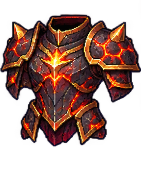
Épico · Nível 70
Armadura da Obsidiana Imperial
Armadura · pesada
Kael, Dorrik e KharunHerói de nível 70 ou superior
Receita desta peça
55.000 Ouro · 2 adicionais à escolha
- Essência de Forja300
- Olho do Núcleo32
- Selo do Arauto28
- Insígnia de Malkor2
- Presa do Permafrost40
- Couro das Geadas32
- Pluma Glacial24
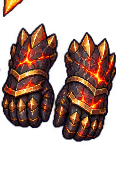
Épico · Nível 70
Luvas da Obsidiana Imperial
Luvas · pesadas
Kael, Dorrik e KharunHerói de nível 70 ou superior
Receita desta peça
55.000 Ouro · 2 adicionais à escolha
- Essência de Forja300
- Olho do Núcleo32
- Selo do Arauto28
- Insígnia de Malkor2
- Presa do Permafrost40
- Couro das Geadas32
- Pluma Glacial24
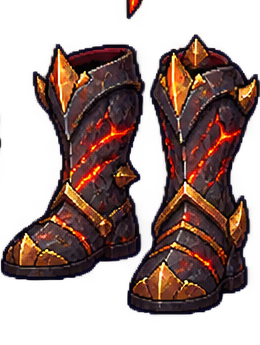
Épico · Nível 70
Botas da Obsidiana Imperial
Botas · pesadas
Kael, Dorrik e KharunHerói de nível 70 ou superior
Receita desta peça
55.000 Ouro · 2 adicionais à escolha
- Essência de Forja300
- Olho do Núcleo32
- Selo do Arauto28
- Insígnia de Malkor2
- Presa do Permafrost40
- Couro das Geadas32
- Pluma Glacial24
Um talismã para toda a equipe
1 acessório universal
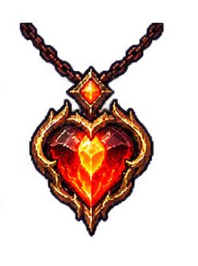
Épico · Nível 70
Talismã do Coração Vulcânico
Acessório universal
Todos os nove heróisHerói de nível 70 ou superior
Receita desta peça
55.000 Ouro · 3 adicionais à escolha
- Essência de Forja300
- Olho do Núcleo32
- Selo do Arauto28
- Insígnia de Malkor2
- Pluma Glacial40
- Cauda da Aurora32
- Fio da Nevasca24
11 técnicas permanentes, separadas dos equipamentos
As técnicas de nível 70 começam a ficar elegíveis na fase 650, nos mundos 3 e 4. A chance é de 2% por abate comum e 10% em chefe ou minichefe, escolhendo uma técnica elegível ainda desconhecida. A chance não é aplicada individualmente a cada técnica; no Mundo 3, técnicas de níveis anteriores ainda não aprendidas também podem participar.
Tecelã · 4 técnicas
Elmo, armadura, luvas e botas leves.
Arcana · 2 técnicas
Armas mágicas/instrumento e acessório universal.
Forja · 5 técnicas
Armas físicas, elmo, armadura, luvas e botas pesadas.
O conhecimento aprendido permanece. Fabricar também exige restaurar a Oficina com seus três conhecimentos e escolher os adicionais da receita.
Cada receita custa 55.000 Ouro e pede 300 Essências de Forja, 32 Olhos do Núcleo, 28 Selos do Arauto, duas Insígnias de Malkor e três materiais de espécies do Mundo 4 em quantidades 40/32/24. Os ingredientes podem ser obtidos antes de Fenrir; a Essência vem da reciclagem de equipamentos. As receitas 70 não exigem materiais dos três chefes fixos do Mundo 4. Consulte os materiais de cada peça no catálogo acima.
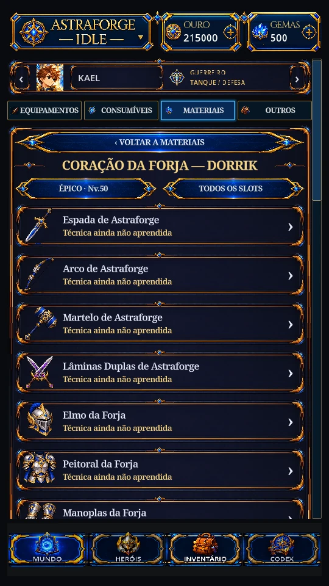
08 · Balanceamento
Preparação antes do próximo desafio
Os ajustes de Kharun e resistência a crítico estão detalhados na seção de personagens. Malkor e Soberano Infernal recebem valores finais de ataque e defesa mais acessíveis, conservando suas mecânicas, fases, raiva e regeneração.
| Chefe | HP | Ataque físico e mágico, cada | Defesa física e mágica, cada |
|---|---|---|---|
| Malkor · 600 | 518.700 | 7.000 | 1.300 |
| Soberano Infernal · 700 | 691.600 | 9.000 | 1.800 |
Receitas de nível 50 usam materiais de 300–500; as de nível 60 usam 300–699. Os volumes foram redistribuídos, e nenhuma receita ou evolução desses tiers exige material do Soberano da fase 700. Equipamentos já fabricados continuam válidos.
O nível 70 é uma melhoria gradual: nas builds comparadas, trocar 60+5 por 70+5 aumentou o poder total em 9,81–10,57%. Esse resultado não é um bônus fixo de todo herói; depende de seus atributos, extras e conjunto.
09 · Interface
Mais clareza entre batalhas
- Mapas internos: tocar numa ilha mostra a descrição e a opção Abrir mundo; abrir exibe a trilha interna. Ao final da trilha, Voltar ao M1/M2/M3/M4 leva à primeira fase (1/201/401/701), disponível depois de concluir todos os chefes fixos do próprio mundo. No M3, vencer apenas Malkor 600 não libera o retorno; ele nunca inicia a fase 600 diretamente.
- Inventário: filtros para armas, capacetes, armaduras, luvas, botas e acessórios. Itens e Materiais guardam categoria, raridade e ordenação independentes durante a sessão.
- Heróis e autoequipar: o seletor de nome fica maior e alinhado, sem uma segunda miniatura junto ao retrato grande. O resultado do autoequipar informa a quantidade real de heróis disponíveis, sem limitar a mensagem aos quatro antigos.
- Missões: recompensas em grupos horizontais, com números inteiros na mesma linha. Valores de Essência iguais a zero deixam de ocupar espaço.
- Ascensão: os dezoito livros exibem capacidade 1/1; excesso antigo fica preservado no registro de overflow.
- Campo de batalha: formação mais próxima, preservando escala, sprites e legibilidade. Ícones antigos de status saem imediatamente do layout.
- Mapas e cenários: etiquetas deixam de formar blocos altos; chefes dos mundos 2 e 3 recebem fundos próprios em continuidade com seus biomas.
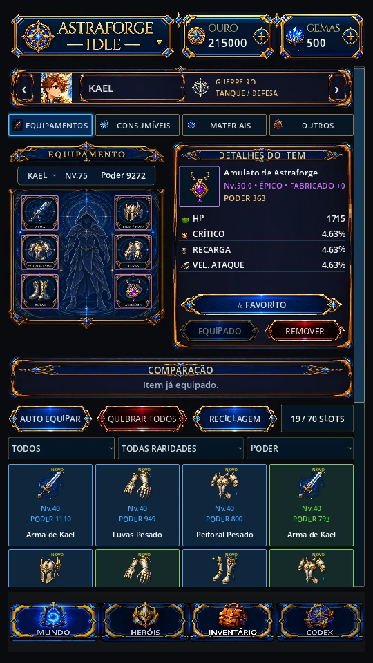
A campanha continua em primeiro plano
O topo passa a mostrar a marca, Ouro e Gemas. Toque em Astraforge Idle para abrir o menu sobre a tela, com Loja, Missões e Configurações. Toque novamente na marca, fora do menu ou use Esc para fechá-lo. Letras, acentos, ícones e espaçamento foram refinados para leitura em telas menores.
A Home mantém a batalha real, barras de HP, avisos de habilidades, controle de AUTO, velocidade e Resumo. A apresentação acompanha o bioma sem cobrir os personagens com informações desnecessárias.
Loja por moeda e finalidade
Gemas e Ouro têm abas próprias, com recrutamento, ascensão e resets organizados em seções. Preços e condições continuam vindo do catálogo do jogo. Pacotes aparecem como Em breve.
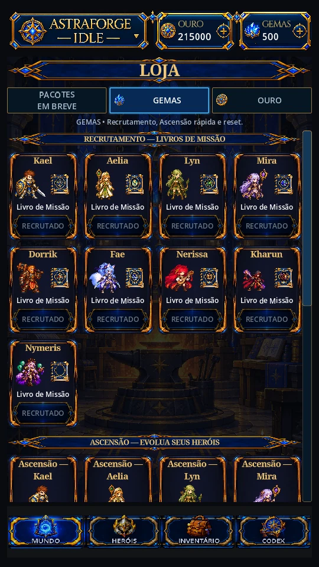
Herói e equipamento mais claros
Status abre ou recolhe o resumo inteiro do herói; Habilidades, Formação e Atributos ficam no grupo de ações. No inventário, Nome, Nível e Poder ficam acima da silhueta. As seis posições de equipamento mostram a arte correta das receitas fabricadas 50, 60 e 70.
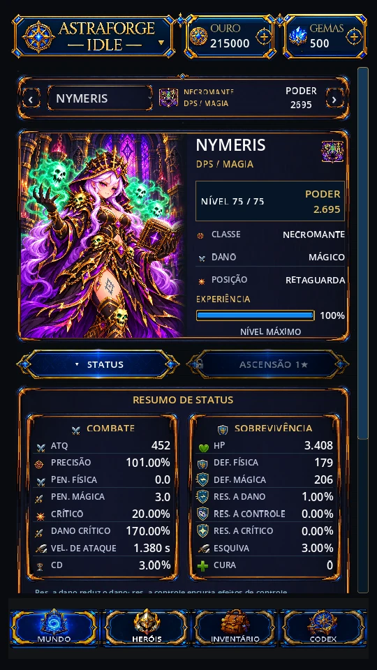
Defesas com funções distintas
Resistência a dano conserva o atributo anterior e reduz o dano recebido. Resistência a controle é um novo atributo independente, que encurta controles aceitos como atordoamento, imobilização e silêncio. Ela não reduz dano nem substitui as regras de imunidade dos chefes. Ambas e a resistência a crítico possuem ícones distintos no resumo de status.
A tela de atributos apresenta textos maiores e Precisão seguida de Esquiva. A Oficina oferece os adicionais correspondentes; a arma da Sacerdotisa também permite escolher Cura, que participa das curas reais da heroína e cresce pelo refino vigente.
O HUD superior foi reduzido em cerca de 15%, com laterais transparentes. Os cenários existentes dos mundos 1, 2 e 3 preenchem o topo atrás do HUD, mantendo a apresentação própria do Mundo 4.
10 · Desempenho
Navegação com menos reconstruções
A alternância entre Mundos e batalha reutiliza as telas, suspende a apresentação oculta e carrega mapas pela fila assíncrona existente. Trilhas e imagens de chefes que não estão sendo vistas deixam de ser carregadas na visão geral.
Em sete trocas repetidas no PC de teste, a mediana da chamada de abrir Mundos passou de 253,23 ms para 0,76 ms; o retorno à batalha, de 122,13 ms para 6,00 ms. São tempos locais de navegação, sujeitos a cache e carga da máquina, e não uma medida de FPS no celular.
O Resumo reaproveita seus controles e atualiza somente o que mudou, reduzindo trabalho repetido nesse painel. As barras de HP e os avisos de habilidades também receberam ajustes de espaço para evitar sobreposições nas proporções de tela verificadas.
O teto de 60 FPS foi preservado. No Galaxy S24+, uma medição de 45 segundos no Mundo 1 em x2 registrou 58,10 FPS de média. Houve pausas e quedas de ritmo; essa janela não comprova 60 FPS constantes.
Ver os números desta medição Android
- Frame médio
- 17,211 ms
- P95
- 16,861 ms
- P99
- 41,714 ms
- Frames acima de 33,33 ms
- 51
Resultados dessa captura no aparelho físico, sem comparação de ganho Android antes/depois. O P99 mostra que ainda há pausas relevantes.
Uma segunda captura, iniciada no Mundo 1 em x1, teve perda da conexão USB e cobertura incompleta. Ela não valida navegação, Oficina ou retomada. Mundos 2, 3 e 4, chefes e aquecimento em sessão prolongada continuam pendentes. Não foi confirmado ganho global de CPU/GPU ou correção de travamentos no Android.
11 · Bugs corrigidos
O impacto no lugar e no momento certos
- O retorno de um mundo deixa de retomar o último boss vencido; mapas, descrição e retorno à primeira fase têm ações separadas.
- A mensagem de autoequipar acompanha o roster jogável atual.
- Efeitos de habilidades só aparecem depois de receber sua posição, eliminando flashes na origem do campo.
- Jornadas de ascensão em andamento recebem recuperação única: rota paga e materiais são preservados; contadores de abate reiniciam. Jornadas concluídas e estrelas conquistadas continuam intactas, com backup e proteção em falha de gravação.
- Filtros de Itens e Materiais deixam de compartilhar categorias indevidamente; quantidades de recompensas não quebram no meio do número.
- Gélido passa a ajustar a cadência real dos básicos de heróis e servos, normalizando o efeito entre fases e ao sair do Mundo 4.
- Maldições de Nymeris e dano verdadeiro passivo de Lyn/Mira participam corretamente das mecânicas de Astarok.
- Um mesmo uso de habilidade com múltiplos impactos não consome várias cargas indevidas dos espelhos da Sacerdotisa.
- Limpeza de batalha desfaz referências antigas de escudos ao trocar encontros.
- O Resumo conserva dano, cura e dano recebido acumulados no encontro ao abrir outras telas; contribuições de servos continuam atribuídas ao herói invocador.
- Acessórios com têmpera de cura progridem tanto com cura realizada quanto recebida. Só HP efetivamente restaurado conta; autocura conta uma vez.
- Saídas inferiores a cinco minutos não criam novas recompensas offline nem aviso de coleta. Uma ausência de pelo menos cinco minutos usa os limites atuais, preservando recibos já pendentes.
- Bosses recebem orientação de sprites conforme sua arte, voltados para a equipe durante a apresentação de combate.
- Barras de HP, sprites e avisos de habilidades recebem espaço próprio nas proporções de tela verificadas.
- Corrigido o carregamento dos catálogos de efeitos de Malkor e Soberano nos recursos empacotados.
A validação consolidada do M4 registra 39 suítes e validadores, 41.218 verificações aprovadas e 105 execuções de combate, com zero timeout. Há cenários repetidos entre rodadas: são 85 pares únicos de cenário/semente. As capturas e verificações visuais foram feitas no PC.
12 · Limitações conhecidas
O que ainda depende de revisão
- V0.6.0 Beta não está anunciada como lançada. Material, data e distribuição Android aguardam aprovação. O download do portal só aponta para um APK realmente disponível em Release pública.
- Equipamento 80/90 e ascensão 2 ainda não estão implementados. Sacerdotisa e Rei guardam a progressão futura; suas builds futuras não foram simuladas.
- Mundo 5 permanece indisponível. As fases 1201–1400 estão reservadas no catálogo.
- O teste físico curto no Galaxy S24+ cobre uma janela do Mundo 1 em x2. A segunda captura tem cobertura incompleta. Mundos 2–4, chefes, menus, Oficina, áudio, retomada e sessão prolongada ainda precisam de validação física.
- Resultados de simulação valem para os conjuntos, formações e sementes testados; não são garantia de vitória para qualquer equipe.
- A validação de dados conserva 69 avisos de assets históricos ausentes. Quatro avisos de referências ao fechar a ferramenta de captura visual também estão registrados; nenhum erro de script foi observado no fechamento do M4.
Ler o changelog completo Consultar disponibilidade Android
O inverno chegou ao projeto. A próxima etapa é revisar esta Beta e preparar sua distribuição.